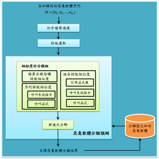

惡意軟體擁有不斷進行演化的特性，屬於動態且持續性的事件，惡意軟體所造成的企業損失甚大，快速的瞭解其惡意行為，將有助於研究人員迅速掌握惡意軟體的攻擊，使所造成的傷害降至最低。因此本研究採用即時分群的方式，當發現可疑軟體時，系統立即透過惡意軟體資料庫進行偵測。
{kind=link}
系統流程主要可分為三個階段，檔案類型初步過濾階段、特徵選取階段和惡意軟體分類預測階段。其中惡意軟體分類預測包含兩子系統，分別為相似度計分模組與漸進式分群，目標惡意軟體產分類結果，存放於分類後已知的惡意軟體資料庫，待下一筆資料進入後再進行分析。
本研究於校內實驗室，將kippo誘捕系統，安裝在Linux作業系統，建置有缺陷的系統，成為駭客攻擊目標的誘餌，吸引駭客進入攻擊誘捕系統，藉此收集惡意軟體樣本。收集期間自2012年8月至2013年1月，總共收集314份可以檔案。
由於惡意軟體屬於動態且持續的事件，因此，未知惡意軟體序列 M = {M1,M2, ..., Mn} 代表惡意軟體逐筆進入本研究系統，並且進行即時的分析。
本研究所收集到的惡意軟體原始碼檔案，主要以Perl、C、Shell程式語言為主，以及其他二進位執行檔。
經由先前所述，我們可以得知惡意軟體之原始碼檔案透過不同的程式語言撰寫而成，並且經由先前文獻得知，惡意軟體模仿多過於創新 [PZR10]。
因此，若由初始版本改寫而來的新版惡意軟體，為同一程式語言撰寫而成，屬於相同家族惡意軟體，故本研究擷取目標惡意軟體原始碼使用的語言類型，並且從惡意軟體資料庫選出使用相同語言類型的惡意軟體，初步分類可能的惡意軟體家族。
本研究依照檔案類型組合整理收集資料，其中Y代表為擁有檔案類型，N則代表沒有。資料集共可分為八個組合，檔案類型組合數量最多為Shell Script與二進位檔案，數量最少為C、Perl與二進位檔案組合。
{kind=link}
本研究邀請專家針對本資料集合進行人工偵測類型，經由專家偵測之惡意軟體資料，共可分為34群惡意軟體家族，每個家族最少有1筆惡意軟體，最多有48筆惡意軟體，其中少於3筆惡意軟體之家族共有17群，僅有1筆惡意軟體之家族共有7群，詳細整理如表4-2所示。
{kind=link}
5-1-1
5-1-2
5-1-3
本研究考量惡意軟體動態且持續性的攻擊，因此我們提出以漸進方式偵測惡意軟體之方法1-Nearest-Neighbor Clustering（1-NN）分群方式，1-NN分群方式：當有一目標惡意軟體則逐一計算各惡意軟體間之相似度，找出最相似之惡意軟體，並且分類至該群。 流程圖
{kind=link}
{kind=link}
{kind=link}
{kind=link}
本研究亦定義惡意軟體相似度門檻值，當目標惡意軟體與已知惡意軟體相似度未大於所定義的相似度門檻值，則會將目標惡意軟體歸類為新類別，因此在實驗階段，本研究將會定義不同的相似度門檻值，觀察系統分群效能。
經由研究實驗顯示，採用原始碼特徵組合，較佳於n-gram特徵選取方式的分群效能，若能搭配二進位檔案MD5格式特徵，將擁有最佳的分群效能。
將n-gram作為惡意軟體特徵，轉為使用惡意軟體原始碼特徵，可以減少傳統上，以n-gram特徵為惡意軟體類型偵測，所面臨到變種惡意軟體偵測的問題，這將能夠協助未來使用原始碼為基礎惡意軟體偵測的相關研究上做為參考依據。
本研究所提出的1-NN、Extended-1-NN漸進式分群方法，能夠反映惡意軟體動態且持續的攻擊特性，並且協助研究人員即時獲取惡意軟體的資訊，做出最有效的反應，對未來偵測惡意軟體類型做為其參考依據。